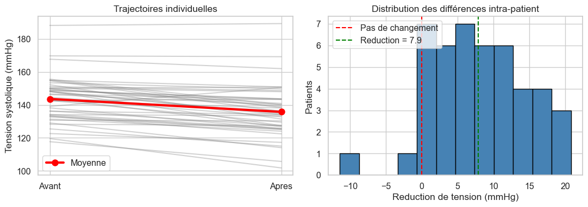

import math
import numpy as np
import pandas as pd
import matplotlib.pyplot as plt
import seaborn as sns
from scipy import stats # tests statistiques
from statsmodels.stats.multitest import multipletests # corrections multiples
np.random.seed(42)
sns.set_theme(style="whitegrid", font_scale=1.05)
Analyse de Données avec Python pour Professionnels de la Santé
Module 4·Tests d’hypothèses
Version condensee 6 heures · Module 4 sur 6 · Duree 60 minutes
Niveau intermediaireDuree 60 minPrerequis : Modules 1, 2Colab compatible
OBJECTIFS DU MODULE
- Enoncer correctement une hypothèse nulle H0 et alternative H1.
- Choisir le bon test selon la question : t de Student (un / deux échantillons / apparie), chi-deux, Mann-Whitney U.
- Verifier les conditions et choisir une alternative non parametrique quand elles echouent.
- Interpreter une p-value correctement et la rapporter avec une taille d’effet et un intervalle de confiance.
- Appliquer une correction pour tests multiples (Bonferroni, Benjamini-Hochberg).
- Distinguer significativite statistique vs clinique.
JEU DE DONNÉES
Extrait pedagogique de l’étude Framingham (cohorte cardiovasculaire de reference, suivie depuis 1948). Variable d’interet :
Source du fichier : GauravPadawe/Framingham-Heart-Study.
TenYearCHD (1 = événement coronarien dans les 10 ans).Source du fichier : GauravPadawe/Framingham-Heart-Study.
0. Imports et reproductibilité
Syntaxe — import depuis un sous-module
from scipy import stats # tout le sous-module from statsmodels.stats.multitest import multipletests # une fonction
1. La logique d’un test d’hypothèse
Un test est une preuve par contradiction probabiliste :
- On suppose H0 vraie (pas d’effet).
- On calcule une statistique de test a partir des données.
- On demande : si H0 etait vraie, ces données seraient-elles inhabituelles ? Cette probabilité est la p-value.
- Si p < seuil \(\alpha\) (souvent 0,05), on rejette H0.
Ce qu’une p-value n’est PAS
- Pas la probabilité que H0 soit vraie.
- Pas la probabilité que le résultat soit du au hasard.
- Ne mesure pas la taille d’un effet.
- p = 0,049 n’est pas notablement différent de p = 0,051.
Regle. Rapporter une p-value avec une taille d’effet et un IC. Une étude de 100 000 patients peut détecter \(d = 0{,}05\) avec \(p < 10^{-6}\) : statistiquement significatif, cliniquement non pertinent.
Reference : Wasserstein RL & Lazar NA, The ASA Statement on p-Values: Context, Process, and Purpose, The American Statistician 70(2), 2016.
2. Test t a un échantillon
Question. La moyenne du cholesterol dans notre clinique differe-t-elle de la moyenne nationale de 200 mg/dL ?
- H0 : \(\mu = 200\)
- H1 : \(\mu \neq 200\)
Hypothese : la moyenne d’échantillonnage est approximativement normale (garantie par le TCL si \(n > 30\), exige une distribution normale sinon).
Syntaxe — test t un échantillon
t, p = stats.ttest_1samp(échantillon, popmean=valeur_h0) # t : statistique de test # p : p-value bilaterale
# Simulation : moyenne 212, écart-type 35, n = 80
chol = np.random.normal(212, 35, size=80)
# Test : moyenne differe-t-elle de 200 ?
t, p = stats.ttest_1samp(chol, popmean=200)
# Calculer l'IC 95% manuellement (scipy ne le donne pas directement ici)
# stats.sem = standard error of mean = écart-type / sqrt(n)
moy = chol.mean()
se = stats.sem(chol)
# stats.t.ppf(p, df) = quantile p de la loi de Student a df degres
ic = moy + np.array([-1, 1]) * stats.t.ppf(0.975, df=len(chol) - 1) * se
print(f"Moyenne échantillon : {moy:.1f} mg/dL")
print(f"IC 95% : [{ic[0]:.1f}, {ic[1]:.1f}]")
print(f"t (df={len(chol)-1}) : {t:.3f}")
print(f"p-value : {p:.4f}")Moyenne échantillon : 207.7 mg/dL
IC 95% : [200.2, 215.1]
t (df=79) : 2.046
p-value : 0.04413. Test t pour deux échantillons indépendants
Question. Le traitement abaisse-t-il la tension par rapport au placebo ?
Hypotheses :
- Echantillons indépendants ;
- Variable approximativement normale dans chaque groupe ;
- Variances egales — relachee par la correction de Welch (
equal_var=False, défaut moderne).
Syntaxe — test t deux échantillons
t, p = stats.ttest_ind(groupe1, groupe2, equal_var=False) # Welch (recommandé par défaut)
# Deux groupes simules
traitement = np.random.normal(128, 15, size=60)
controle = np.random.normal(138, 16, size=55)
# Test t de Welch (variances inégales autorisees)
t, p = stats.ttest_ind(traitement, controle, equal_var=False)
print(f"Moyenne traitement : {traitement.mean():.1f} mmHg")
print(f"Moyenne controle : {controle.mean():.1f} mmHg")
print(f"Difference : {controle.mean() - traitement.mean():.1f} mmHg")
print(f"t de Welch : {t:.3f}")
print(f"p-value : {p:.4f}")Moyenne traitement : 127.5 mmHg
Moyenne controle : 139.5 mmHg
Difference : 11.9 mmHg
t de Welch : -4.460
p-value : 0.00004. Test t apparie (avant / après)
Question. Un programme d’exercice de 12 semaines réduit-il la tension systolique ? Chaque patient est son propre temoin.
Le test utilise les différences intra-patient, eliminant la variabilite inter-patient.
Syntaxe — test t apparie
t, p = stats.ttest_rel(avant, après) # rel = related/paired # Les deux tableaux DOIVENT être alignes patient par patient.
n = 45
avant = np.random.normal(142, 12, n) # tension avant
après = avant - np.random.normal(8, 6, n) # tension après (moins ~8 mmHg)
diff = avant - après # réduction par patient
t, p = stats.ttest_rel(avant, après)
print(f"Moyenne avant : {avant.mean():.1f} mmHg")
print(f"Moyenne après : {après.mean():.1f} mmHg")
print(f"Reduction moyenne : {diff.mean():.1f} mmHg")
print(f"t apparie (df={n-1}): {t:.3f}")
print(f"p-value : {p:.2e}") # notation scientifiqueMoyenne avant : 143.6 mmHg
Moyenne après : 135.8 mmHg
Reduction moyenne : 7.9 mmHg
t apparie (df=44): 7.798
p-value : 7.89e-10# Visualisation : trajectoires individuelles + distribution des différences
fig, axes = plt.subplots(1, 2, figsize=(11, 4))
# Lignes grises : une par patient (spaghetti plot)
for i in range(n):
axes[0].plot([0, 1], [avant[i], après[i]],
color="gray", alpha=0.35)
# Ligne rouge : la moyenne du groupe
axes[0].plot([0, 1], [avant.mean(), après.mean()],
color="red", lw=3, marker="o", markersize=8, label="Moyenne")
axes[0].set_xticks([0, 1])
axes[0].set_xticklabels(["Avant", "Apres"])
axes[0].set_ylabel("Tension systolique (mmHg)")
axes[0].set_title("Trajectoires individuelles")
axes[0].legend()
# Distribution des différences intra-patient
axes[1].hist(diff, bins=12, edgecolor="black", color="steelblue")
axes[1].axvline(0, color="red", ls="--", label="Pas de changement")
axes[1].axvline(diff.mean(), color="green", ls="--",
label=f"Reduction = {diff.mean():.1f}")
axes[1].set_xlabel("Reduction de tension (mmHg)")
axes[1].set_ylabel("Patients")
axes[1].set_title("Distribution des différences intra-patient")
axes[1].legend()
plt.tight_layout(); plt.show()
5. Test du chi-deux d’indépendance
Question. La prévalence du diabète est-elle associee a la catégorie d’IMC ?
Compare les comptages observes dans un tableau de contingence aux comptages attendus sous independance.
\[\chi^2 = \sum_{ij} \frac{(O_{ij} - E_{ij})^2}{E_{ij}}\]
Hypothese : chaque effectif attendu \(\ge 5\). Sinon utiliser le test exact de Fisher (stats.fisher_exact).
Syntaxe — chi-deux
tab = pd.crosstab(df["ligne"], df["colonne"]) # contingence chi2, p, dof, attendu = stats.chi2_contingency(tab) # chi2 : statistique # p : p-value # dof : degres de liberte = (n_lignes - 1) * (n_colonnes - 1) # attendu : matrice des effectifs attendus sous H0
# Simulation : 500 patients, repartis selon l'IMC
n = 500
imc_cat = np.random.choice(["Normal", "Surpoids", "Obesite"],
size=n, p=[0.3, 0.4, 0.3])
# Probabilite de diabète dependant de la catégorie d'IMC
p_diab = {"Normal": 0.08, "Surpoids": 0.18, "Obesite": 0.35}
# np.random.binomial(1, p) tire 0 ou 1 avec probabilité p
# List comprehension : une boucle inline qui construit une liste
diab = np.array([np.random.binomial(1, p_diab[b]) for b in imc_cat])
# np.where(condition, valeur_si_True, valeur_si_False) : vectorise un if/else
df = pd.DataFrame({
"imc": imc_cat,
"diabète": np.where(diab == 1, "Oui", "Non"),
})
# Table de contingence puis test
tab = pd.crosstab(df["imc"], df["diabète"])
print(tab)
chi2, p, dof, attendu = stats.chi2_contingency(tab)
print(f"\nchi2 = {chi2:.2f}, df = {dof}, p = {p:.2e}")
print("\nEffectifs attendus sous H0 (independance) :")
print(pd.DataFrame(attendu, index=tab.index, columns=tab.columns).round(1))diabète Non Oui
imc
Normal 137 14
Obesite 101 51
Surpoids 160 37
chi2 = 28.03, df = 2, p = 8.20e-07
Effectifs attendus sous H0 (independance) :
diabète Non Oui
imc
Normal 120.2 30.8
Obesite 121.0 31.0
Surpoids 156.8 40.26. Mann-Whitney U — alternative non parametrique
Quand la variable est asymétrique (duree de sejour, couts, biologie avec longue queue) ou que \(n\) est petit, le test t sur l’échelle brute peut induire en erreur.
Mann-Whitney U compare les rangs : il teste si une distribution domine stochastiquement l’autre.
Syntaxe
u, p = stats.mannwhitneyu(g1, g2, alternative="two-sided")
# Duree de sejour : exponentielle a droite (asymétrique)
dms_chir = np.random.exponential(7, size=40) # moyenne 7 j
dms_med = np.random.exponential(4.5, size=45) # moyenne 4.5 j
u, p = stats.mannwhitneyu(dms_chir, dms_med, alternative="two-sided")
# np.median plus informatif que mean pour une distribution asymétrique
print(f"DMS mediane (chirurgie) : {np.median(dms_chir):.1f} j")
print(f"DMS mediane (medecine) : {np.median(dms_med):.1f} j")
print(f"U = {u:.0f}, p = {p:.4f}")DMS mediane (chirurgie) : 4.0 j
DMS mediane (medecine) : 3.3 j
U = 1016, p = 0.30927. Correction pour tests multiples
Si vous testez 20 hypothèses indépendantes au seuil 0,05 sous H0, vous attendez 1 faux positif par hasard.
Deux familles de corrections :
- Bonferroni (contrôle FWER) — multiplie chaque p par \(m\). Tres conservateur ; a utiliser quand même un faux positif est inacceptable.
- Benjamini-Hochberg FDR — contrôle la proportion attendue de faux positifs parmi les positifs declares. Standard en genomique et en analyses exploratoires.
Syntaxe
from statsmodels.stats.multitest import multipletests rejette, p_corr, _, _ = multipletests(p_array, alpha=0.05, method="bonferroni") # rejette : tableau de True/False # p_corr : p-values corrigees
# Simulation : 1000 tests sous H0 (rien a trouver)
n_tests = 1000
pvals = np.empty(n_tests) # tableau vide de longueur 1000
# Boucle : 1000 paires de groupes tirees de N(0, 1) - H0 vraie
for i in range(n_tests):
a = np.random.normal(0, 1, 30)
b = np.random.normal(0, 1, 30)
pvals[i] = stats.ttest_ind(a, b).pvalue
# Sans correction
n_fp = (pvals < 0.05).sum() # comptage vectorise
print(f"Sans correction : {n_fp} significatifs sur {n_tests} ({n_fp / n_tests:.1%})")
# Avec corrections (4 valeurs renvoyees, on ignore les 2 dernieres avec _)
rej_bonf, _, _, _ = multipletests(pvals, alpha=0.05, method="bonferroni")
rej_fdr, _, _, _ = multipletests(pvals, alpha=0.05, method="fdr_bh")
print(f"Bonferroni : {rej_bonf.sum()} significatifs")
print(f"FDR (BH) : {rej_fdr.sum()} significatifs")Sans correction : 44 significatifs sur 1000 (4.4%)
Bonferroni : 0 significatifs
FDR (BH) : 0 significatifs8. Taille d’effet — d de Cohen
\[d = \frac{\bar{x}_1 - \bar{x}_2}{s_{pooled}}\]
Reperes (Cohen 1988, indicatifs) :
- \(|d| < 0{,}2\) — negligeable
- \(0{,}2 \le |d| < 0{,}5\) — petit
- \(0{,}5 \le |d| < 0{,}8\) — moyen
- \(|d| \ge 0{,}8\) — large
Syntaxe — opérateur ternaire (if inline)
x = "a" if condition else "b" # équivalent a if/else en une ligne
def cohens_d(g1, g2):
"""d de Cohen pour deux groupes indépendants."""
n1, n2 = len(g1), len(g2)
# ddof=1 : variance d'échantillon (denominateur n-1, pas n)
s = math.sqrt(((n1 - 1) * np.var(g1, ddof=1) + (n2 - 1) * np.var(g2, ddof=1))
/ (n1 + n2 - 2))
return (g1.mean() - g2.mean()) / s
# Reutiliser les groupes du paragraphe 3
d = cohens_d(traitement, controle)
# Chaine de if/else inline (lecture droite a gauche)
label = ("large" if abs(d) >= 0.8 else
"moyen" if abs(d) >= 0.5 else
"petit" if abs(d) >= 0.2 else "negligeable")
print(f"d de Cohen (traitement vs controle) : {d:.2f} ({label})")d de Cohen (traitement vs controle) : -0.83 (large)# Mise en garde : grand n + petit effet = p minuscule
huge1 = np.random.normal(120.0, 15, size=50_000)
huge2 = np.random.normal(120.5, 15, size=50_000) # différence réelle de 0.5 mmHg
t, p = stats.ttest_ind(huge1, huge2)
print(f"Diff moyenne : {huge2.mean() - huge1.mean():.2f} mmHg")
print(f"p-value : {p:.2e}")
print(f"d de Cohen : {cohens_d(huge1, huge2):.3f}")
print(" -> Statistiquement significatif. Cliniquement non pertinent.")Diff moyenne : 0.63 mmHg
p-value : 2.89e-11
d de Cohen : -0.042
-> Statistiquement significatif. Cliniquement non pertinent.9. Application — Framingham
Source : GitHub - GauravPadawe/Framingham-Heart-Study.
Syntaxe — dropna avec subset
df.dropna() # supprime toute ligne avec NaN df.dropna(subset=["col"]) # seulement si NaN dans col df.copy() # bonne pratique après filtrage
import os
from pathlib import Path
import pandas as pd
# Chemins de cache candidats, dans l'ordre :
# 1. ./data/ (jupyter local, notebook a la racine)
# 2. ../data/ (jupyter local, notebook dans un sous-dossier)
# 3. ./ (au pire on cree un cache dans le cwd)
# En Colab, aucun n'existe : on tombe sur l'URL et on cree ./data/ pour les
# cellules suivantes.
_CANDIDATES = [Path("data"), Path("../data")]
DATA_DIR = next((p for p in _CANDIDATES if p.is_dir()), Path("data"))
DATA_DIR.mkdir(exist_ok=True)
def load_csv(name: str, url: str, **read_csv_kwargs) -> pd.DataFrame:
"""Charge un CSV : cache local d'abord, sinon URL publique.
Le cache utilise le meme separateur que la lecture (TSV reste TSV).
"""
for candidate_dir in _CANDIDATES:
local = candidate_dir / name
if local.exists():
return pd.read_csv(local, **read_csv_kwargs)
df = pd.read_csv(url, **read_csv_kwargs)
try:
sep = read_csv_kwargs.get("sep", ",")
(DATA_DIR / name).parent.mkdir(parents=True, exist_ok=True)
df.to_csv(DATA_DIR / name, index=False, sep=sep)
except OSError:
pass
return df
FRAM_URL = (
"https://raw.githubusercontent.com/GauravPadawe/"
"Framingham-Heart-Study/master/framingham.csv"
)
fram = load_csv("framingham.csv", FRAM_URL)
# .dropna() supprime TOUTE ligne avec au moins 1 NaN
# Approche grossiere mais didactique - en pratique on imputerait
fram_clean = fram.dropna().copy()
print(f"Dimensions (complet) : {fram_clean.shape}")
print(f"Prevalence CHD 10 ans : {fram_clean['TenYearCHD'].mean():.1%}")
fram_clean.head()Dimensions (complet) : (3658, 16)
Prevalence CHD 10 ans : 15.2%| male | age | education | currentSmoker | cigsPerDay | BPMeds | prevalentStroke | prevalentHyp | diabetes | totChol | sysBP | diaBP | BMI | heartRate | glucose | TenYearCHD | |
|---|---|---|---|---|---|---|---|---|---|---|---|---|---|---|---|---|
| 0 | 1 | 39 | 4.0 | 0 | 0.0 | 0.0 | 0 | 0 | 0 | 195.0 | 106.0 | 70.0 | 26.97 | 80.0 | 77.0 | 0 |
| 1 | 0 | 46 | 2.0 | 0 | 0.0 | 0.0 | 0 | 0 | 0 | 250.0 | 121.0 | 81.0 | 28.73 | 95.0 | 76.0 | 0 |
| 2 | 1 | 48 | 1.0 | 1 | 20.0 | 0.0 | 0 | 0 | 0 | 245.0 | 127.5 | 80.0 | 25.34 | 75.0 | 70.0 | 0 |
| 3 | 0 | 61 | 3.0 | 1 | 30.0 | 0.0 | 0 | 1 | 0 | 225.0 | 150.0 | 95.0 | 28.58 | 65.0 | 103.0 | 1 |
| 4 | 0 | 46 | 3.0 | 1 | 23.0 | 0.0 | 0 | 0 | 0 | 285.0 | 130.0 | 84.0 | 23.10 | 85.0 | 85.0 | 0 |
10. Exercices (avec corriges)
Exercice 1 — Test t a deux échantillons sur sysBP selon TenYearCHD
# Votre essai ici# Solution
# .loc[ligne, colonne] : sélection precise par étiquette
chd = fram_clean.loc[fram_clean["TenYearCHD"] == 1, "sysBP"]
ctrl = fram_clean.loc[fram_clean["TenYearCHD"] == 0, "sysBP"]
t, p = stats.ttest_ind(chd, ctrl, equal_var=False)
# .values pour convertir pd.Series -> np.array (cohens_d attend du numpy)
d = cohens_d(chd.values, ctrl.values)
print(f"Moyenne SBP, CHD = 1 : {chd.mean():.1f}")
print(f"Moyenne SBP, CHD = 0 : {ctrl.mean():.1f}")
print(f"Difference : {chd.mean() - ctrl.mean():.1f} mmHg")
print(f"t = {t:.2f}, p = {p:.2e}, d = {d:.2f}")Moyenne SBP, CHD = 1 : 144.0
Moyenne SBP, CHD = 0 : 130.3
Difference : 13.7 mmHg
t = 11.41, p = 1.03e-27, d = 0.64Exercice 2 — Test chi-deux : currentSmoker x TenYearCHD
# Votre essai ici# Solution
tab = pd.crosstab(fram_clean["currentSmoker"], fram_clean["TenYearCHD"])
chi2, p, dof, _ = stats.chi2_contingency(tab)
print(tab)
print(f"\nchi2 = {chi2:.2f}, df = {dof}, p = {p:.2e}")TenYearCHD 0 1
currentSmoker
0 1597 272
1 1504 285
chi2 = 1.24, df = 1, p = 2.66e-01Exercice 3 — Correction multiple sur 7 predicteurs
Tester age, totChol, sysBP, diaBP, BMI, heartRate, glucose entre groupes CHD. Appliquer Bonferroni et BH-FDR.
# Votre essai ici# Solution
predicteurs = ["age", "totChol", "sysBP", "diaBP", "BMI", "heartRate", "glucose"]
lignes = [] # liste de dictionnaires, sera convertie en DF
for col in predicteurs:
g1 = fram_clean.loc[fram_clean["TenYearCHD"] == 1, col]
g0 = fram_clean.loc[fram_clean["TenYearCHD"] == 0, col]
t, p = stats.ttest_ind(g1, g0, equal_var=False)
d = cohens_d(g1.values, g0.values)
# .append() ajoute un dictionnaire a la liste
lignes.append({
"variable": col,
"diff": g1.mean() - g0.mean(),
"cohen_d": d,
"p": p,
})
# Convertir la liste-de-dicts en DataFrame
res = pd.DataFrame(lignes)
# Corrections - on extrait seulement la 2e valeur (p corrigees)
_, p_bonf, _, _ = multipletests(res["p"], alpha=0.05, method="bonferroni")
_, p_fdr, _, _ = multipletests(res["p"], alpha=0.05, method="fdr_bh")
res["p_bonferroni"] = p_bonf
res["p_fdr_bh"] = p_fdr
res.round(4)| variable | diff | cohen_d | p | p_bonferroni | p_fdr_bh | |
|---|---|---|---|---|---|---|
| 0 | age | 5.5753 | 0.6697 | 0.0000 | 0.0 | 0.0000 |
| 1 | totChol | 11.2092 | 0.2552 | 0.0000 | 0.0 | 0.0000 |
| 2 | sysBP | 13.6961 | 0.6360 | 0.0000 | 0.0 | 0.0000 |
| 3 | diaBP | 5.0027 | 0.4225 | 0.0000 | 0.0 | 0.0000 |
| 4 | BMI | 0.9284 | 0.2291 | 0.0000 | 0.0 | 0.0000 |
| 5 | heartRate | 0.6840 | 0.0571 | 0.2202 | 1.0 | 0.2202 |
| 6 | glucose | 8.1153 | 0.3420 | 0.0000 | 0.0 | 0.0000 |
Resume
Vous savez choisir le bon test pour une question clinique, vérifier ses conditions, corriger pour tests multiples, et toujours rapporter une taille d’effet avec un IC a côte de la p-value.
Suite -> Module 5 : regression. Memes données Framingham, mais ajustement multivariable pour plusieurs predicteurs simultanement.
Ressources et liens utiles
Documentation officielle
- scipy.stats — https://docs.scipy.org/doc/scipy/référence/stats.html (catalogue de tous les tests dispo).
- statsmodels — multiple testing — https://www.statsmodels.org/stable/stats.html#multiple-tests-and-multiple-comparison-procédures
Le debat sur les p-values
- Wasserstein RL & Lazar NA (2016) The ASA Statement on p-Values: Context, Process, and Purpose. The American Statistician 70(2): 129-133 — déclaration officielle de l’American Statistical Association.
- Greenland S. et al. (2016) Statistical tests, P values, confidence intervals, and power: a guide to misinterpretations. European Journal of Epidemiology 31: 337-350 — les 25 fausses interprétations courantes des p-values.
- Amrhein V. et al. (2019) Scientists rise up against statistical significance. Nature 567: 305-307.
Taille d’effet
- Cohen J. (1988) Statistical Power Analysis for the Behavioral Sciences. 2e ed., Lawrence Erlbaum — origine des seuils 0.2/0.5/0.8.
- Pour calculer la taille d’effet en pratique avec scipy/numpy : Pingouin (https://pingouin-stats.org/) est une bibliothèque francaise (developpee a Geneve) très complete.
Tests multiples
- Benjamini Y. & Hochberg Y. (1995) Controlling the False Discovery Rate: A Practical and Powerful Approach to Multiple Testing. JRSS-B 57(1): 289-300 — papier fondateur du FDR.
Jeu de données
- Framingham Heart Study (officiel, NIH) — https://www.framinghamheartstudy.org/
- Extrait pedagogique sur GitHub — https://github.com/GauravPadawe/Framingham-Heart-Study
Pour aller plus loin
- Pingouin (https://pingouin-stats.org/) — tests, tailles d’effet, ANOVA, robustes, dans une seule API.
- scipy.stats — power calculations — pour planifier la taille d’échantillon avant de collecter.